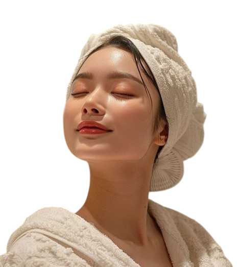

Averageness
The most attractive faces are often the most average.
Instead of striking, unique features that stand out from the crowd, science reveals that averageness is a key ingredient in what we perceive as beautiful.

So, what does it mean, in this context, for a face to be "average"?
It doesn’t mean being a 5/10, being mediocre in attractiveness
or having the faces that most of the general population. Instead, it refers to a face that closely resembles the mathematical average of all faces in a population, whereby you overlay their faces together.
Think of the prototypical pretty 'girl next door'.
This aesthetic emphasizes natural, approachable beauty rather than striking features. It’s a beauty standard that feels attainable and familiar, making it universally appealing.
This sense of familiarity radiated by a 'girl next door' aligns with the concept of averageness in attractiveness.
When you blend together more faces, the resulting "composite" face becomes more average. Instinctively, the features and their relative positions on a highly average face seem "just right",
it is kind of face that feels like you’ve seen it before, even if you haven’t. See Composite Face below under Averageness effect.
While a high degree of averageness can be described as "girl next door" pretty, it plays a more profound role in facial beauty across gender and different ethnic groups.
Note: The term "average" used throughout this page does not mean the median or mean attractiveness of the general population.
Instead, it describes a face that is created by blending many faces together, resulting in a balanced, symmetrical, and harmonious appearance.
Averageness effect
When you blend together many faces, the resulting "composite" face is often rated as more attractive.
This phenomenon is the averageness effect, and it can be illustrated using an image of a composite face blended using a computer.
The image in the center is obtained from blending the images of the individual faces at the side, often referred to as the composite image. Typically, an attractive 'average' face is derived using faces from the same ethnic group. E.g. the attractive Russian female face with a high degree of averageness would be blended from many Russian female faces.

Cue to health, development & genetic fitness
The increased attractiveness of averaged faces may be linked to perceptions of being healthier and more trustworthy. Averageness in facial features is associated with genetic diversity and health. Faces that deviate from the average are more likely to signal potential genetic or developmental issues, making average faces more appealing.
In 1999, scientific literature claimed that no matter how symmetrical a face is, ‘averageness is the only characteristic discovered to date which is both necessary and sufficient to ensure facial attractiveness… without a facial configuration close to the average of the population, a face will not be attractive.’
Aesthetic appeal
We all have a prototype or template in our head of what a human face should look like.
derive this face subconsciously from averaging the faces we have been exposed to.

Easy to process visually
Average faces are aesthetically pleasing as they fit neatly into our mental templates of what a face should look like, making it easier for our brains to process the face.
An ‘average’ face that matches the prototypical face conjured in our head invokes a sense of familiarity for us to recognise other humans (from the same species).
On the other hand, deviations from the prototypical face make them less human, uncanny and unnatural, as we feel threatened.
Attractiveness Scale
Averageness increases attractiveness of a face, but it is only one of the key components to attractiveness.
For an ageing population, it does not necessarily mean that the older 'averaged' face is more attractive, since youthfulness is also a cue for fertility and attractiveness.
See more under Neoteny Section.
In fact, a face with a high degree of averageness is attractive and would rank somewhere as indicated on the diagram below,
but the most attractive faces have specific features that are slightly above average that make the face more striking and memorable.
Averageness & Attractiveness
While averageness forms a strong foundation for attractiveness, the most captivating faces often go a step further. Perrett et al. (1994) found that while average faces are attractive, exaggerating certain features slightly beyond the average can make a face even more appealing.

Model with sharper jawline & enhanced facial definition
compared to a highly averaged face
A face with slightly larger eyes, higher cheekbones,
or a more defined jawline than the average can stand out in a way that is still harmonious but also more striking.
These subtle exaggerations are often perceived as signs of vitality, youth, and fertility—traits that are evolutionarily advantageous and universally appealing.
Think of an average face as a blank canvas—neutral, balanced, and universally appealing. It’s visually pleasing because it’s familiar and free of flaws or any extremes.

But the most captivating faces are like masterpieces: they start with that blank canvas but add subtle enhancements—like brighter eyes or sharper cheekbones—that elevate them without overwhelming the balance.
These slight exaggerations make the face stand out while still feeling harmonious.
If the artist goes overboard and adds too many bold or clashing elements, the painting can lose its harmony and become overwhelming.
The same applies to faces: if a face has too many or excessively exaggerated features (e.g. overly-strong jaw in the case of James Sapphire), it can start to feel unnatural or unbalanced.
In short, averageness is the foundation of attractiveness, but the most appealing faces combine this with refined touches that are a tad bit above average to make them unforgettable.
Exception to Averageness effect
Averageness is a component of an attractive face and deviations from this signals abnormalities in health and development, contributing to the perception of attractiveness.
Yet, certain features that are exaggerated make a face more striking and unique.
So, what exactly are these 'positive' deviations that increase attractiveness? What are these exaggerated features that boost attractiveness?
Research suggests the attractive exaggerated features often align with cues of health, youth, and fertility—traits that are evolutionarily appealing.
Large, Bright Eyes: Slightly larger and brighter eyes are universally attractive because they signal youth and vitality. Increased prominence of the eyes can make a face feel more expressive and engaging.
High Cheekbones: Cheekbones that are slightly more pronounced than average create a defined, sculpted look. This feature is associated with good bone structure and overall health.
Full Lips: Lips that are fuller than average are often seen as a sign of youth and fertility. They add a touch of softness and sensuality to the face, making it more appealing.
Strong Jawline (in Men): For men, a slightly more defined jawline than average is often seen as attractive because it signals masculinity and strength. This trait is linked to higher testosterone levels,
which are associated with good health and genetic fitness .
Learn More under Attractive Features

The image with 0% exaggeration is a composite face with a high degree of averageness. The image with features such as jawline, face shape and eye size exaggerated at about 200% was rated the most attractive, thus highlighting that faces with features that are a tad above average tend to be more attractive.
However, exaggerated traits that emphasize sex differences may also increase attractiveness, such as exaggerated features that increase femininity in females.
Learn more under Sexual Dimorphism Section.
Your Glow Up!

As established, a face with a high degree of averageness—meaning it’s close to the mathematical average of the population—is typically rated around a 7/10 in attractiveness (as shown from the graph).
Importantly, this "average" isn’t a 5/10 in attractiveness; it’s already above the midpoint because it represents a balanced, harmonious face free from flaws.

Here’s the exciting part: since genetic traits follow a normal distribution curve, the majority of people have "average" genes.
This doesn’t mean mediocre—it means you’re already working with a balanced, harmonious canvas. Most people do not realise the profound impact of their lifestyle on appearance, they do not understand
the time and sacrifices that models or attractive people in general put in to maintain their looks. These changes do not have to be surgical.
The potential to be at least a 7/10 is literally in your DNA and you have the power to enhance what you’ve been given!
The Secret to Unlocking Your Natural Glow Up:
While genetics provide the foundation, lifestyle and environmental factors (e.g. diet, nutrition, posture, skincare and grooming) significantly impact your appearance.
Small, consistent efforts are key to help you build your best self.
Here, we provide you the information to guide you on your glowup journey.
Glowing up is about small enhancements, but big results!
Learn More under the How to Glow Up section